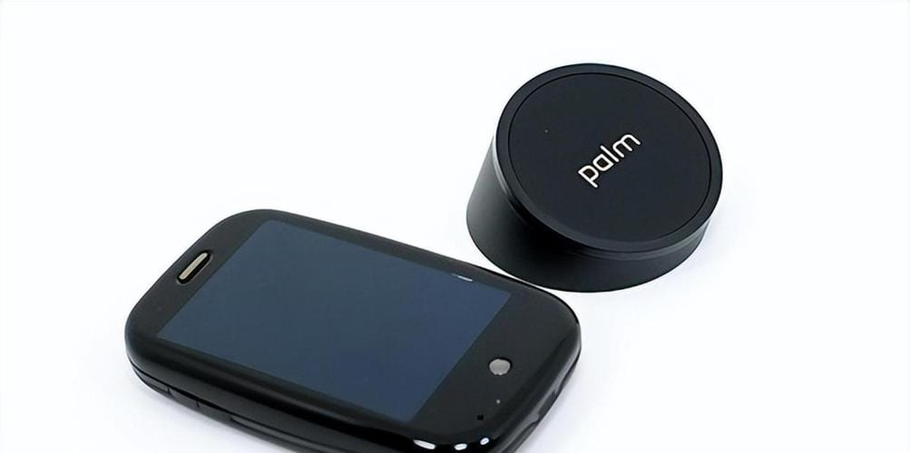

Palm Pre

webOS 开山鼻祖，卡片式多任务影响了整个行业。
客观评测
Palm Pre 采用 3.1 英寸 320×480 电阻式电容触屏，搭载 OMAP 3430 550MHz 处理器与 256MB 内存，硬件规格在 2009 年属于主流偏上。侧滑键盘键程短促，手感一般。300 万像素镜头成像可用但不出色。真正的革新在软件：webOS 的卡片式多任务、底部手势条、通知中心设计被后来的 iOS 和安卓大量借鉴，堪称智能手机交互的活水源头。
主观点评
在 iPhone 3G 与 Android G1 争霸的 2009 年，Pre 像一颗安静的鹅卵石。滑开键盘刷卡片的动作在当时极具未来感，系统流畅度也配得上这份优雅。可惜 Palm 星火未燎原便熄灭，Pre 成了'改变了行业却没能改变自己命运'的悲情注脚。今天把玩它，是对智能手机另一条可能路径的凭吊。
优点与不足
- webOS 的卡片多任务和手势操作理念超前，至今仍不过时
- 圆润鹅卵石造型配合滑盖键盘，握持手感极佳
- Synergy 云聚合联系人与消息，思路领先同代产品
- 机身塑料感偏重，滑盖结构长期使用易松动
- 应用商店匮乏，Palm 后继乏力导致系统夭折
参数规格
| 屏幕 | 3.1 英寸电容屏，320×480 |
|---|---|
| 处理器 | 德州仪器 OMAP 3430 550MHz |
| 内存 | 256MB RAM |
| 存储 | 8GB，不支持扩展 |
| 摄像头 | 300万像素，无前置 |
| 系统 | Palm webOS 1.0 |
| 电池 | 1150mAh，可拆卸 |
| 网络 | 3G，CDMA 版为 Sprint 独家 |
| 键盘 | 侧滑盖四行 QWERTY 全键盘 |
| 特色 | 卡片式多任务、手势操作条、云同步 |
| 重量 | 约 133g |